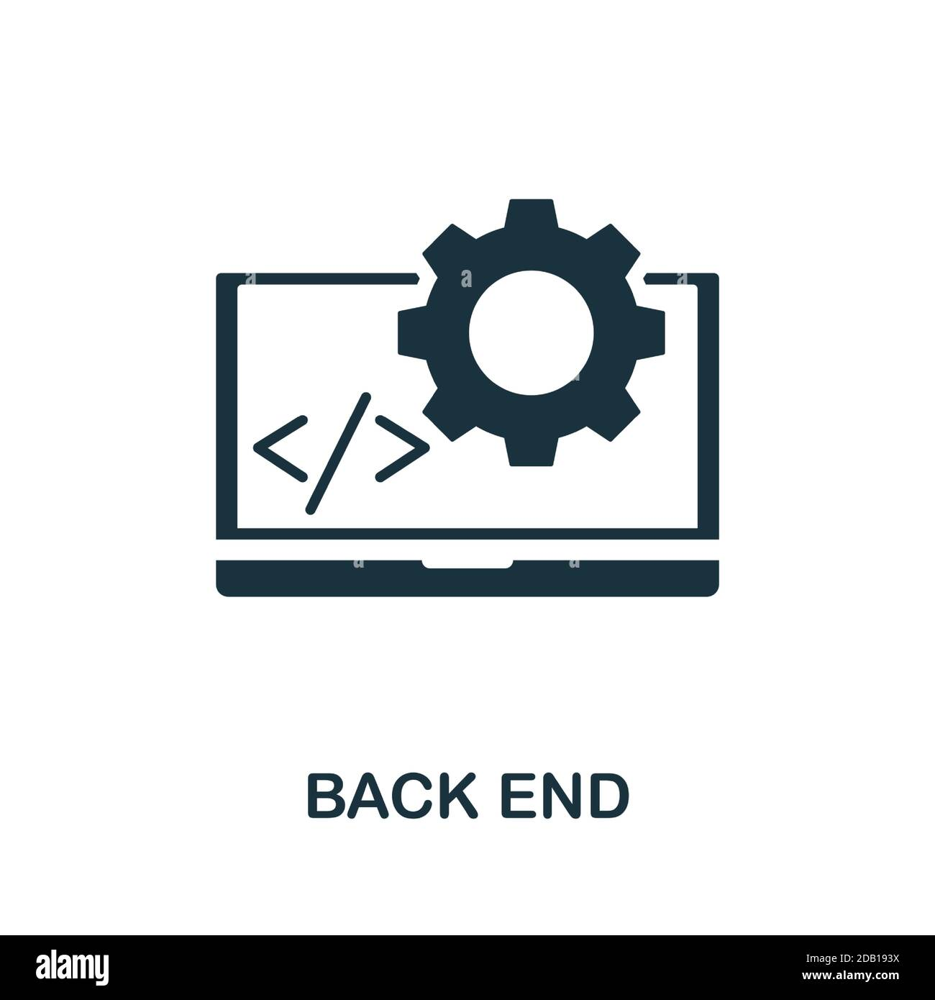

Mis Servicios
Desarrollado frontend

Creación de interfaces de usuario visualmente atractivas y altamente responsivas tanto para aplicaciones web como móviles. Competente en JavaScript y versado en frameworks populares como Angular, Vue y React.
Calidad de software
Desarrollar y ejecutar planes de pruebas de regresion y manuales. Asi como crear historias de usuario. Implementar metodologías de Desarrollo Dirigido por Pruebas (TDD).
Programador backend

Dando pasos en el paisaje back-end, explorando las posibilidades con Django y Python. Abrazando la curva de aprendizaje, estoy ansioso por contribuir a los proyectos cerrando la brecha entre las interfaces de usuario cautivadoras y la funcionalidad backend en evolución.